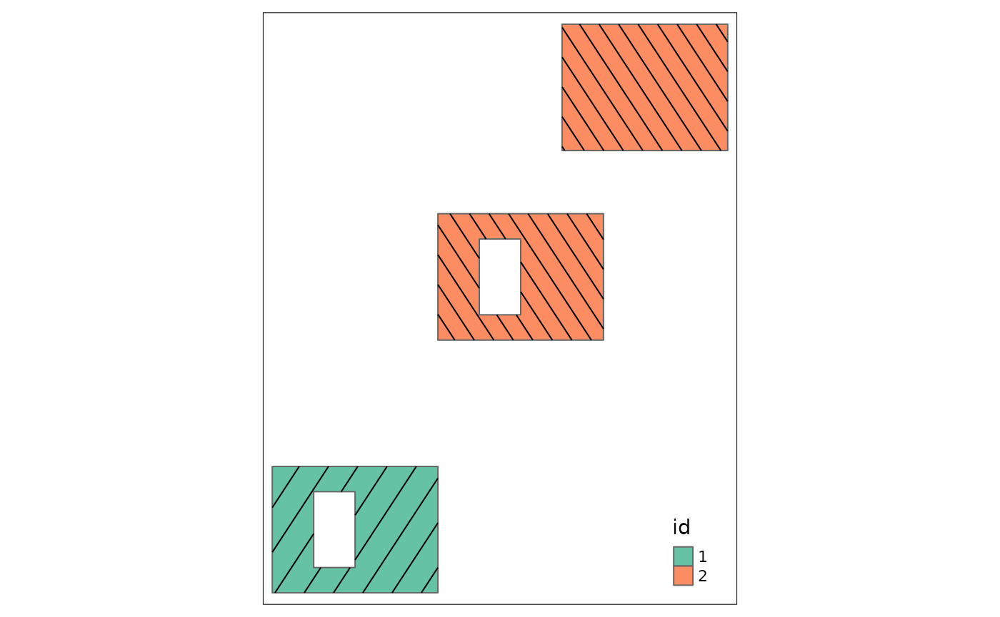

vignettes/leaflet_shading_polygon.Rmd
leaflet_shading_polygon.RmdDrawing polygons filled with a hatched background is quite easy with classical plot in R. This only requires to define density and angle parameters of polygon function. SpatialPolygons from library sp also uses this polygon function. However, if you want to draw a hatched area of a SpatialPolygons when there are holes, this may not work perfectly as the hole is filled with the plot background color to hide the hatched area of the surrounding polygon. Hence, if you want to draw a polygon with holes over a background image, you will not be able to see what is behind holes, which is a shame because this is one aim of a hole. Here, I show how you could get rid of this behaviour by using SpatialLines to draw the hatched area.
By the way, this trick is also useful for polygons in leaflet widgets as, to my knowledge, hatched polygons is not implemented. Some may want to draw hatched areas instead of coloured polygons with transparency, in particular when there is area superimposition.
I built a R package, available on my statnmap github, to provide the function hatched.SpatialPolygons. This function is based on the plot method for SpatialPolygons of library sp. I modified the functions and sub-functions to remove all code for direct drawing and allow to output a SpatialLinesDataFrame object, which can then be drawn over any plot, with or without the original SpatialPolygons.
# devtools::install_github("statnmap/HatchedPolygons")
# vignette("leaflet_shading_polygon", package = "HatchedPolygons")
# x.hatch <- hatched.SpatialPolygons(x, density = c(60, 90), angle = c(45, 135))Let’s create two polygons, one representing a hole inside the other.
library(HatchedPolygons)
library(dplyr)
library(sp)
library(sf)
library(raster)
# library(HatchedPolygons)
# Create two polygons: second would be a hole inside the first
xy = cbind(
x = c(13.4, 13.4, 13.6, 13.6, 13.4),
y = c(48.9, 49, 49, 48.9, 48.9)
)
hole.xy <- cbind(
x = c(13.5, 13.5, 13.45, 13.45, 13.5),
y = c(48.98, 48.92, 48.92, 48.98, 48.98)
)
par(bg = "white", mar = c(2, 2, 0.5, 0.5))
plot(xy)
polygon(xy, density = 5, lwd = 2, col = "grey20")
polygon(hole.xy, density = 5, lwd = 2, angle = -45, col = "blue")Let’s duplicate polygons at different positions and transform these polygons as SpatialPolygons, including holes. Using default graphical options, polygons can be plotted with hatched areas and holes are visible. Polygon drawing function uses the color of the background to fill holes, so that they appear as hole. However, if you want to superimpose your layer over another layer, holes will hide the background image.
# Create a SpatialPolygon to plot
xy.sp <- SpatialPolygonsDataFrame(
SpatialPolygons(list(
Polygons(list(Polygon(xy),
Polygon(hole.xy, hole = TRUE)), "1"),
Polygons(list(Polygon(hole.xy + 0.2, hole = TRUE),
Polygon(xy + 0.2),
Polygon(xy + 0.35)), "2")
)),
data = data.frame(id = as.character(c(1, 2)))
)
par(bg = "lightblue", mar = c(2, 2, 0.5, 0.5)) # default
plot(xy.sp, density = 10, col = c("red", "blue"), lwd = 2)
# Let's define a raster to be used as background
r <- raster(nrows = 50, ncols = 50)
extent(r) <- extent(xy.sp)
r <- setValues(r, 1:ncell(r))
# Draw again polygons with holes
par(bg = "lightblue", mar = c(2, 2, 0.5, 0.5))
image(r, col = rev(terrain.colors(50)))
plot(xy.sp, density = 10, col = c("red", "blue"), lwd = 2, add = TRUE)To avoid filling holes with hatched lines, I decided to use SpatialLines and crop lines that were over a hole using library rgeos. I had to account for multiple polygons and thus created a dataframe with the SpatialLines to record original polygons ID. Thus, the number of features in the SpatialLines is not the same than the original SpatialPolygons but the ID column should allow to retrieve the correct polygon and define common colors for instance.
# Allows for different hatch densities and directions for each polygon
xy.sp.hatch <- hatched.SpatialPolygons(xy.sp, density = c(40, 60), angle = c(45, 135))## Warning: GEOS support is provided by the sf and terra packages among others
## Warning: GEOS support is provided by the sf and terra packages among others
## Warning: GEOS support is provided by the sf and terra packages among others
xy.sp.hatch## class : SpatialLinesDataFrame
## features : 3
## extent : 13.4, 13.95, 48.9, 49.35 (xmin, xmax, ymin, ymax)
## crs : NA
## variables : 1
## names : ID
## min values : 1
## max values : 2
# Draw again polygons with holes
par(bg = "lightblue", mar = c(2, 2, 0.5, 0.5))
image(r, col = rev(terrain.colors(50)))
plot(xy.sp, col = c("blue", "red"), add = TRUE)
plot(xy.sp.hatch, col = c("cyan", "grey90")[as.numeric(xy.sp.hatch$ID)],
lwd = 3, add = TRUE)An interesting possibility of the function is that it can also be used for leaflet widgets, which, to my knowledge, lacks the possibility to fill polygons with a hatched area.
library(leaflet)
m <- leaflet() %>%
addTiles(
urlTemplate = "https://{s}.tile.openstreetmap.org/{z}/{x}/{y}.png") %>%
addPolygons(data = xy.sp,
fillColor = c("transparent", "red"),
color = "#000000",
opacity = 1,
fillOpacity = 0.6,
stroke = TRUE,
weight = 1.5
) %>%
addPolylines(data = xy.sp.hatch,
color = c("blue", "#FFF")[as.numeric(xy.sp.hatch$ID)])
# Save the map ----
# htmlwidgets::saveWidget(m, file = "Hatched_Polygon_Leaflet_alone.html")
mggplot2
Of course, this can also be used with ggplot2…
## Warning: `tidy.SpatialPolygonsDataFrame()` was deprecated in broom 1.0.4.
## ℹ Please use functions from the sf package, namely `sf::st_as_sf()`, in favor
## of sp tidiers.
## This warning is displayed once every 8 hours.
## Call `lifecycle::last_lifecycle_warnings()` to see where this warning was
## generated.
xy.sp.hatch.l <- broom::tidy(xy.sp.hatch) %>%
tidyr::separate(id, into = c("id", "SubPoly"))
ggplot(xy.sp.l) +
geom_polygon(aes(x = long, y = lat, group = group, col = id),
fill = "transparent", size = 1.5) +
geom_line(data = xy.sp.hatch.l,
aes(x = long, y = lat, group = group, col = id),
size = 1) +
guides(col = FALSE)## Warning: Using `size` aesthetic for lines was deprecated in ggplot2 3.4.0.
## ℹ Please use `linewidth` instead.
## This warning is displayed once every 8 hours.
## Call `lifecycle::last_lifecycle_warnings()` to see where this warning was
## generated.## Warning: The `<scale>` argument of `guides()` cannot be `FALSE`. Use "none" instead as
## of ggplot2 3.3.4.
## This warning is displayed once every 8 hours.
## Call `lifecycle::last_lifecycle_warnings()` to see where this warning was
## generated.
# http://stackoverflow.com/questions/12047643/geom-polygon-with-multiple-hole/12051278#12051278
# ggplot(xy.sp.l) +
# geom_polygon(aes(x = long, y = lat, group = id, fill = id))sf
Function hatched.SpatialPolygons does not yet work direcly with polygons from library sf but SpatialPolygons can be transformed as sf objects.
Imagine you created / read a sf object
# Depends on your version of sf and sp because of projections
# nc <- sf::st_read(system.file("shape/nc.shp", package="sf"))
# Allows for different hatch densities and directions for each polygon
# nc.hatch <- hatched.SpatialPolygons(nc, density = c(40, 60), angle = c(45, 135))
xy.sf <- sf::st_as_sf(xy.sp) # simulate st_read()
xy.sf.hatch <- hatched.SpatialPolygons(xy.sf, density = c(40, 60), angle = c(45, 135))## Warning: GEOS support is provided by the sf and terra packages among others
## Warning: GEOS support is provided by the sf and terra packages among others
## Warning: GEOS support is provided by the sf and terra packages among others
library(tmap)
tm_shape(xy.sf) +
tm_sf(col = "id", palette = "Set2") +
tm_shape(xy.sf.hatch) +
tm_sf()## Warning: Currect projection of shape xy.sf unknown. Long-lat (WGS84) is
## assumed.## Warning: Currect projection of shape xy.sf.hatch unknown. Long-lat (WGS84) is
## assumed.
Description of this function can be found on statnmap.com Function hatched.SpatialPolygons can be found in my R package HatchedPolygons on my statnmap github. This R package has been built only for this function